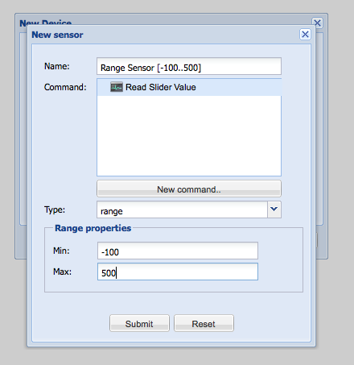
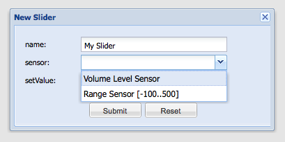
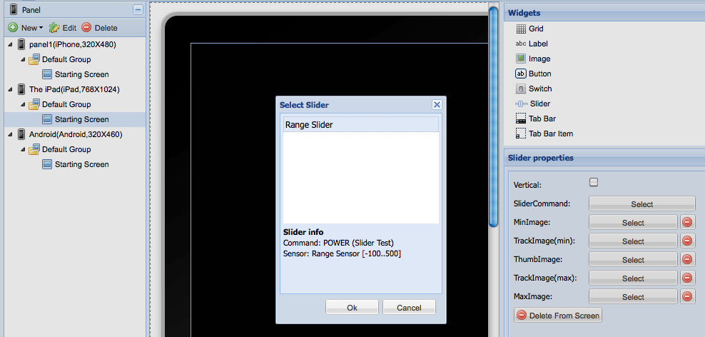
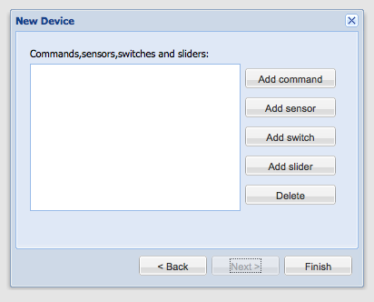

Hi guys, I have a few spare cycles this week and though I would try adding a new protocol. Adding the necessary classes to org.openremote.controller.protocol.* seems failry strait forward, but I have a few questions:
- Where else in the controller code do I need to add support (xml files, config files, java classes outside of org.openremote.controller.protocol.*)
- Where do I add this new protocol to the designer code? Am I missing other projects I need to add it to?
- I want to support sensor state and especially the new polling sensor state mode, how supported is this right now in 2.0?
- I see in the API 2.0 docs that sensor data comes back with <status id="1">on</status>, where are these types defined? If i wanted to send back a level (60%) how would that be done?
- Is there any code that can demonstrate the sensor polling functionality?
- The system I'm talking to uses a persisitent socket connection using a 16 character hex key for security, I would really like this to be connected all the time and not have the user have to enter this long key + the ip + the port for every command/sensor in the designer (and have to create a new connection for each request). Whats the best way to store this? Is there somewhere in the controller that the user can set the key, ip and port permanently?
Thanks!
{kind=link}
{kind=link}
{kind=link}
{kind=link}
In the controller's applicationContext.xml : http://openremote.svn.sourceforge.net/svnroot/openremote/tags/OpenRemote_Boss_2_0_0_Alpha4/Controller_2_0_0_Alpha6/config/applicationContext.xml Relevant sections: <bean id = "commandFactory" class = "org.openremote.controller.command.CommandFactory"> <property name = "commandBuilders"> <props> <prop key = "ir">irCommandBuilder</prop> <prop key = "knx">knxCommandBuilder</prop> <prop key = "x10">x10CommandBuilder</prop> <prop key = "tcpSocket">tcpSocketCommandBuilder</prop> <prop key = "telnet">telnetCommandBuilder</prop> <prop key = "httpGet">httpGetCommandBuilder</prop> <prop key = "upnp">upnpCommandBuilder</prop> <prop key = "mockup">mockupCommandBuilder</prop> </props> </property> </bean> To add your command builder implementations responsible for the XML parsing. In the build(Element element) method of your command builder, expect the XML structure to be: <command protocol = "dans-protocol" > <property name = "argname1" value = "..."/> <property name = "argname2" value = "..."/> <property name = "argnameX" value = "..."/> </command> Where protocol attribute's value matches the key attribute's value in the command builders property list. As child elements you get an arbitrary list of property values (configured in the designer, see later) which you can freely parse and interpret (name,value list). Back to applicationContext.xml, below the command builder property list, add the class method mapping to instantiate your protocol command builder: <!-- COMMAND BUILDERS ============================================================================ | | Implementation specific builders for the Event Factory bean. In short, each distinct command | type, as they appear in controller.xml, will need a corresponding builder implementation. | | See the org.openremote.controller.command.CommandBuilder interface for details if you seek to | extend the implementation with additional command types. +--> <!-- Infrared Command Builder --> <bean id = "irCommandBuilder" class = "org.openremote.controller.protocol.infrared.IRCommandBuilder"/> Where the bean's id attribute value matches the command builder name you gave in the command builders property list earlier. |
Add the XML definition for your protocol attributes into the protocols directory : http://openremote.svn.sourceforge.net/viewvc/openremote/tags/OpenRemote_Boss_2_0_0_Alpha4/Designer_2_0_0_Alpha7/protocols/protocols/ For example: <?xml version="1.0" encoding="UTF-8"?> <openremote xmlns="http://www.openremote.org" xmlns:xsi="http://www.w3.org/2001/XMLSchema-instance" xsi:schemaLocation="http://www.openremote.org protocol.xsd"> <protocol displayName="Dan's New HA Protocol" tagName="dans-protocol"> <attr name="command-name" label="Command Name"> <validations> <allowBlank>false</allowBlank> <regex message="Command must be A, B or C">[ABC]</regex> </validations> </attr> <attr name="command-value" label="Value for Command"> <validations> <allowBlank>false</allowBlank> <maxLength>1</maxLength> <regex message="Only numbers allowed">[0-9]</regex> </validations> </attr> </protocol> </openremote> Where the value of tagName attribute matches the key value in the command builder property list in (1). This definition would produce an instance of XML Element for your command builder, such as: <command protocol = "dans-protocol" > <property name = "command-name" value = "A"/> <property name = "command-value" value = "1"/> </command> |
|
Juha, thank you for the detailed posting, I'm going to give it a shot right now. |
It needs to be thoroughly reviewed and tested. There are some parts of it that still look suspect to me, and may still change. However, it is stable enough so that even if you do use the current API and contribute your protocol back to our codebase, I'm willing to port the changes where API might still get modified. On top of that, this part is poorly documented which is also why it still needs a thorough review.
For the controller configuration, specified in ?controller-2.0-M7.xsd here : https://openremote.svn.sourceforge.net/svnroot/openremote/tags/OpenRemote_Boss_2_0_0_Alpha4/Controller_2_0_0_Alpha6/config/controller-2.0-M7.xsd In particular, section: <!-- ############### sensor ################ --> <xsd:element name="sensor"> <xsd:annotation> <xsd:documentation><![CDATA[ the definition of a command. the command must have a id , protocol. ]]></xsd:documentation> </xsd:annotation> <xsd:complexType> <xsd:sequence> <xsd:group ref="sensorGroup" minOccurs="0" maxOccurs="unbounded" /> </xsd:sequence> <xsd:attribute name="id" type="idType" use="required" /> <xsd:attribute name="type" type="sensorType" use="required" /> <xsd:attribute name="name" type="xsd:string" use="required" /> </xsd:complexType> </xsd:element> <xsd:group name="sensorGroup"> <xsd:annotation> <xsd:documentation> <![CDATA[ a sensor definition-group. ]]> </xsd:documentation> </xsd:annotation> <xsd:choice> <xsd:element ref="include" minOccurs="0" maxOccurs="unbounded" /> <xsd:element ref="state" minOccurs="0" maxOccurs="unbounded" /> <xsd:element ref="min" minOccurs="0" maxOccurs="1" /> <xsd:element ref="max" minOccurs="0" maxOccurs="1" /> </xsd:choice> </xsd:group> <xsd:element name="min"> <xsd:complexType> <xsd:attribute name="value" type="xsd:int" use="required" /> </xsd:complexType> </xsd:element> <xsd:element name="max"> <xsd:complexType> <xsd:attribute name="value" type="xsd:int" use="required" /> </xsd:complexType> </xsd:element> <xsd:element name="state"> <xsd:complexType> <xsd:attribute name="name" use="required" /> <xsd:attribute name="value" use="optional" /> </xsd:complexType> </xsd:element> <xsd:simpleType name="sensorType"> <xsd:restriction base="xsd:string"> <xsd:enumeration value="switch" /> <xsd:enumeration value="level" /> <xsd:enumeration value="range" /> <xsd:enumeration value="color" /> <xsd:enumeration value="custom" /> </xsd:restriction> </xsd:simpleType> Where "switch" sensor type would in this case expects on/off strings as return values.
In the StatusCommand interface, the controller passes the type of the sensor that requests a value from your device (through a StatusCommand with read() interface). Expected return value is a string representation that matches the sensor's type (assuming your status command implementation can support such a sensor type). So in the designer if the sensor that has been mapped to your StatusCommand is type LEVEL, then it expects an integer value as a string in the range of [0-100]. In your case you'd return "60". This is the part that still needs some review and may undergo some changes.
Nothing good yet, only a (too) simplistic mock: https://openremote.svn.sourceforge.net/svnroot/openremote/tags/OpenRemote_Boss_2_0_0_Alpha4/Controller_2_0_0_Alpha6/src/org/openremote/controller/protocol/test/mockup/MockupCommand.java I'm working on the rest. |
You can specify controller properties in the designer. They are defined here: In your case, add your own category (Dan's Protocol) and the required configuration properties. This is also poorly documented at the moment. |
|
Awsome Juha, I'm just finishing up getting device on/off/level working. Next I need to set up a local copy of the designer, have a feeling that may take a little bit. I completely understand that things are a moving target, so no worries if the code changes. I defiantely plan to contribute my code back. |
|
So i have the sensor part working, I can create a switch in the designer and watch it update in realtime on my iphone simulator when I physically turn on or off the light. Now I'm having issues sending commands from the iphone, I have created simple switch commands (ON, OFF) and hooked them up in the modeler. The problem is that when I click on the switch or button (i tried both) that is wired up to the command it goes out and seems to grab all the files off the controller again rather then issue a command. I then tried a http command (http protocol) and wired a button to that, same result. I ran this under Wireshark, when you push a button (wired to either a http command or my protocol command) the iphone makes the following calls:
It never calls a command action. I'm a little stumped. |
|
Does it work if you invoke the REST interface directly from your browser? http://localhost:8080/controller/rest/control/button-id/click ? Did you use the iPhone client from http://openremote.svn.sourceforge.net/svnroot/openremote/branches/feature/iPhone_profile_service ? |
|
Yes, the rest link works, I'm able to use both the button and the switch (http://localhost:8080/controller/rest/control/8/on , http://localhost:8080/controller/rest/control/8/off). I was using the iphone project from the alpha4 tag, but the one you mention above has the same problem, it can pull sensor data just fine, but when I click on a button or switch it goes out and grabs the main controller login page ( GET /controller ) and the other ones mentioned above. |
|
hmm ok, sounds strange, haven't looked into it yet, might get to it next week |
|
Found it, in ServerDefinition.m in the iPhone source there are two methods + (NSString *)controlRESTUrl { + (NSString *)securedControlRESTUrl { controlRESTUrl is what I think was suppose to be used (as everything else is non ssl), but ScreenViewController.m was using securedControlRESTUrl and trying to send via ssl on port 8443. So far so good, I'm going to finish the lighting control (levels and scenes) and continue on with audio, HVAC and security. |
|
Another question, my slider won't move or budge in the iPhone ui, I'm guesing this is because the min and max values are undefined, where do these get set? I see them in the XSD but I'm not sure if they are set in the designer (where?) or by something in the controller. Right now the min should be 0 and max 100, but when I get to thermostats, the min will be something above 0 and max something above 100. Also is the stepping always 1 or can you set it to something else (like .5 for Celsius users who use half increments). I'm finally getting comfortable in the code, so hopefully the frequency of questions will start to slow down |
|
They're set in the designer. First the technical details on the "Building Modeler" window and once you're done, bind the slider definition to the actual UI widget on the UI Designer side (this means that on UI designer side you have no control over things like ranges or commands, only how the slider visually looks). Note that the Designer has UI bugs here (some I just noticed) so you more or less have to follow these steps, can't get too creative yet. Sensor of "level" type are implicitly in range [0-100] so usually for percentage values. Sensor of "range" type lets you define an arbitrary range (within MIN/MAX Integer values). So first create a new sensor for your device (and bind it to a command you use to poll its current value). If you choose "range' you can specify the min/max values:  Then create a new slider element in the same device and bind it to your sensor. You should also bind to a command that you use to set a new value for the device when you move the slider knob:  Once done, switch to the UI Designer side, drag a slider on your screen and bind it to your device's slider definition in the properties.  You should end up with controller.xml with something like this: <components> ... <slider id="41"> <setValue> <include type="command" ref="45" /> </setValue> <include type="sensor" ref="42" /> </slider> </components> <sensors> <sensor id="42" name="Range Sensor [-100..500]" type="range"> <include type="command" ref="46" /> <min value="-100" /> <max value="500" /> </sensor> </sensors> So there you have your range. The usual disclaimer, much of slider functionality still needs some testing/tweaking.
Think we talked about default stepping for "level" type of sensors but that might have been dropped. I need to check. |
|
Great, thats just what I was looking for. |
|
So I have made really great progress in the last 24 hours. I have everything wired up with a persistent connection to my controller. The polling sensor feature is great, there is almost no delay from when I turn off a light, change the volume or have a temperature change and when the iphone software updates, very cool. I'm now wrestling with the modeler code a bit, I will probably post back here again with some more questions. I thought i would post my progress here in case others are curious. I have the following working
|
|
Happy to hear it has been smooth so far |
|
I have a question on the modeler (really great work by the way, very polished and well thought out). Before I go down the path of creating commands, sensors and ui elements I want to make sure I'm thinking about it the right way.
Does this sound right? I have 50+ lights, so I'm going to have to create almost 500 objects. Is there anything I can do to speed this up? I'm going to have the same problem for audio commands, there are almost 40 key presses that can be sent, there's one command on the controller which takes an integer for the key, but in the modeler I have to create 40 commands, one for each command press, and this is for just one audio zone (and I have 12). I also have 9 thermostats, some temp sensors, omni macros and scenes commands, phew this could take a while Now that I am actually verbalizing this, I think it may make sense for me to write an importer from a connection to the omni hardware. Once connected I can pull all devices on the system (name, number, type, etc...). Do you have any thoughts on how such a call might be best implemented in the modeler? I just need to add a button that asks for the ip, port and key and have it go out and create the commands, sensors switches and sliders based on what comes back. |
Only at high level, however, if you look at an already created device in the modeler window, you will find there's an "Import IR commands" in the context menu. You could add your own import command there with an additional menu item. Long term, if there are more import functionality we want to include in the UI - which could be quite likely - this may not be the right place. My thinking is it would fit better with the "New Device" wizard dialog flow, however, we may need to redesign this dialog flow differently to accommodate importing. So short term additional context menu item would be fine. |
|
You may also need a HTTP/REST interface in the controller to delegate the connection actions to for discovery, depending what type of connection needs you have from the web application (which is essentially your local web browser and therefore sand-boxed to some degree). |
|
Replying to myself, actually all imports should start here, including the current "Import IR Commands" flow. 
It's clear enough with a new "Import..." button and then a choice of systems to import from (Beehive, discovery or otherwise)/ |
|
Edited with the correct screenshot. |
|
Agreed, I'm looking at DeviceCommandWindow.java as a place to start, I'm thinking it would be similar, you pick a protocol, enter the required fields (taken from the protocol xml file) and click import. |
|
Yep. |
|
Hi, Dan, as far as I see you write an interface to HAI Omni, right? It's nice too see such an effort. I will have to do the same with my own hardware that I'm building right now. It will have very simple ASCII protocol of "command,value" type. I hope you will make your code public to help me walk the road easier |
|
Right now I'm just starting on getting a REST import service working from the controller so the modeler could hit /rest/import/omnilinkII/ip/port/key on the controller and get back commands, sensors and controls in an XML format. Once I have this working I will be able to post all of it back to the projetct. Nothing I'm working on is secret, so I can send you anything that you need in the mean time. The detailed instructios Juha gave above was enough to get something working in about a day or two. So I would definately start there. |
|
Here's the xml I'm thinking about returning, this would be a device with a single light, let me know what you think. <device model="OmniPro II 3.2"> |
|
Hi Dan, Just to be clear.. is this the XML you want to use to parse and translate into a model (commands, switches, etc.) in the OR Designer? Who/what generates it? Thanks, – Juha |
|
Yes, this would be the controller response to the modeler. I have this setup as /rest/import/omnilinkII right now. With just my lights, its creating over 700 objects (command, sensors, switches, sliders), I'm working on the modeler side right now to get these to import. The command sections contain protocol specific information/parameters (in the modeler these are what I have defined in the protocol xml file as attrs). Every element has an id so that other elements can point to them. For example, sliders point their command attribute to the id of a command element, and they point their sensor attribute to the id of a sensor element. I have no attachment to the format of the xml and I'm quite possibly the worst namer of objects/methods/packages/classes/xml elements possible, so if you have a better schema I would be happy to implement it. |
Ok, understand.
Sounds fine.
Looks dandy to me. And whatever schema you're comfortable with. It looks very clean to me. |
|
Recapped most of this discussion in:
|